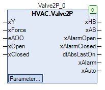

Valve2P (FB)¶
FUNCTION_BLOCK Valve2P
Short Description¶
Control of a binary valve actuator with two position feedback signalsTypical application: Drive of a boiler plant with butterfly valves
Portrayal¶

Interfaces¶
Inputs¶
Name Datatype
Range
Init-Value
Functional Description
xY BOOL Control signal
xForce BOOL FALSE Forced override after manual override
eAOO HVACTYPES.eManBin HVACTYPES.eManBin.Auto, HVACTYPES.eManBin.ManOff, HVACTYPES.eManBin.ManOn HVACTYPES.eManBin.Auto Operating mode of manual override - Hardware
xOpen BOOL Feedback valve opening
xClosed BOOL Feedback valve closure
Outputs¶
Name Datatype
Range
Init-Value
Functional Description
xHB BOOL Release valve actuator after manual override
xAB BOOL Enable valve drive before manual override
xAlarmOpen BOOL Fault Position Valve opening
xAlarmClosed BOOL Malfunction Position Valve closure
dtAbsLastOn DATE_AND_TIME Date / time of the last anti-lock operation
xAlarm BOOL Collective alarm
xAuto BOOL Collective message of Automatic operation
Setpoints / Parameters¶
Name Datatype
Range
Init-Value
Functional Description
udiAbsTime UDINT 0 ... 600s 200s Duration of anti-lock operation
todAbsStartTime TOD 00:00:00 - 23:59:59 o’clock
09:00:00 o’clock
Time point of anti-lock operation
eAbsDay eDoW eDow.Inactive, eDoW.Monday ... eDoW.Sunday eDoW.Monday Weekday of the anti-lock operation
udiControlTime UDINT 10s ... 600s 150s Signal delay of position monitoring
xControl BOOL TRUE Enabling position monitoring
xForceOption BOOL FALSE Status of output xHB with forced override
eManModeB eMANBIN eMANBIN.Auto, eMANBIN.ManOff, eMANBIN.ManOn eMANBIN.Auto Operating mode of manual override for the xHB digital output
Functional Description¶
Automatic output xAB¶
xHB manual output¶
xAB eManModeB xForce xForceOption xHB Notes
FALSE eMANBIN.Auto FALSE X FALSE Manual override module in automatic mode
TRUE eMANBIN.Auto FALSE X TRUE Manual override module in automatic mode
X eMANBIN.ManOff FALSE X FALSE Manual override module in manual mode Off
X eMANBIN.ManOn FALSE X TRUE Manual override module in manual mode On
X X TRUE FALSE FALSE Forced override Close
X X TRUE TRUE TRUE Forced override Open
Malfunction Position Valve opening xAlarmOpen¶
Malfunction Position valve opening xAlarmClosed¶
xAlarm collective alarm¶
Anti-lock module¶
Collective message automatic mode xAuto¶
Forced override xForce¶
Visualization¶
Codesys¶
- InOut:
Scope Name Type Initial Comment Input xY BOOL Control signal
xForce BOOL FALSE Forced override after Manual override
eAOO eManBin HVACTYPES.eManBin.Auto Operating mode of manual override - Hardware
xOpen BOOL Feedback valve opening
xClosed BOOL Feedback valve closure
Output xHB BOOL Release valve actuator after manual override
xAB BOOL Enable valve drive before manual override
xAlarmOpen BOOL Fault Position Valve opening
xAlarmClosed BOOL Malfunction Position Valve closure
dtAbsLastOn DT Date / time of the last anti-lock operation
xAlarm BOOL Collective alarm
xAuto BOOL Collective message of Automatic operation
Input udiAbsTime UDINT 120 Duration of anti-lock operation
todAbsStartTime TOD TIME_OF_DAY#8:0 Time point of anti-lock operation
eAbsDay eDoW eDow.Monday Weekday of the anti-lock operation
udiControlTime UDINT 200 Signal delay of position monitoring
xControl BOOL TRUE Enabling position monitoring
xForceOption BOOL FALSE Status of output xHB with forced override
eManModeB eMANBIN eMANBIN.Auto Operating mode of manual override for the xHB digital output